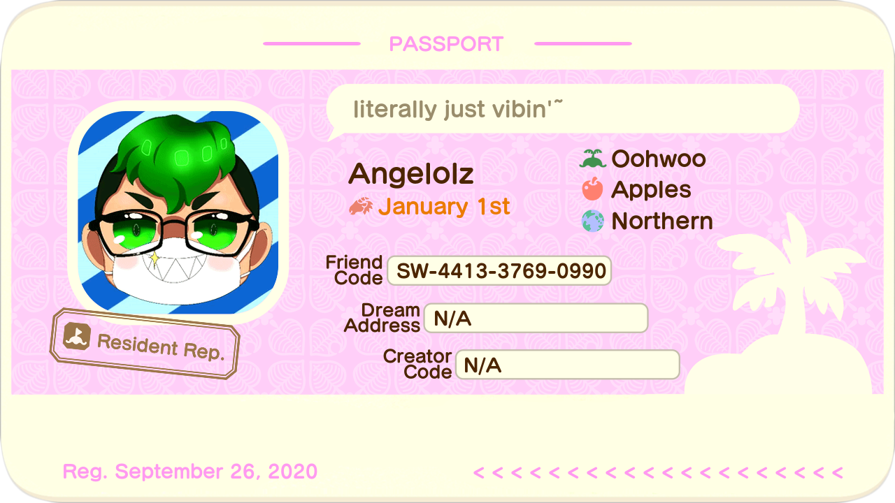
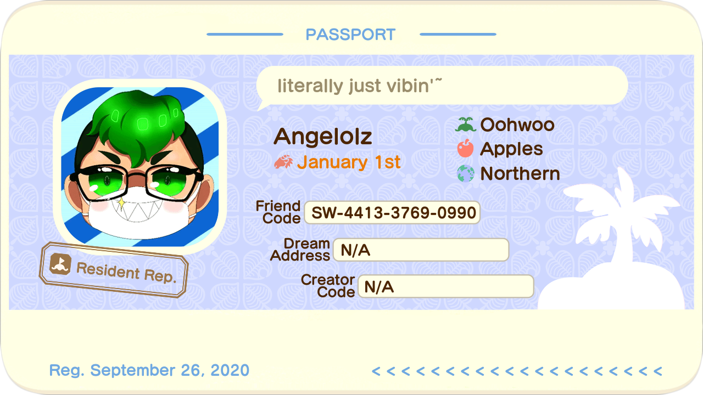
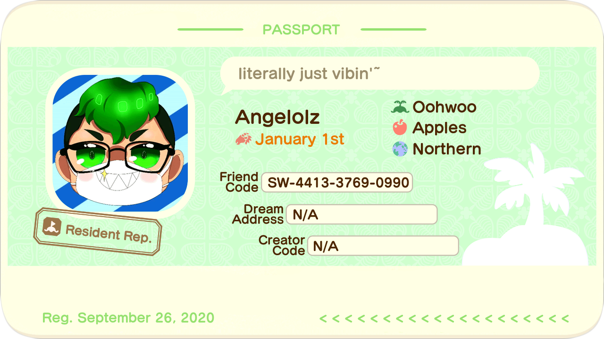
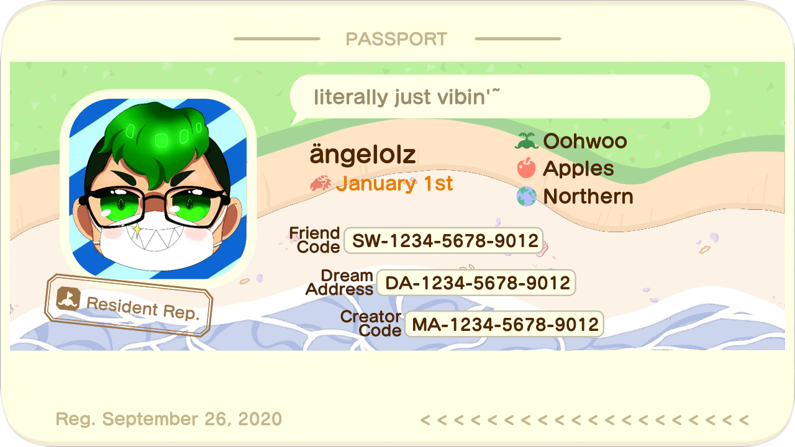
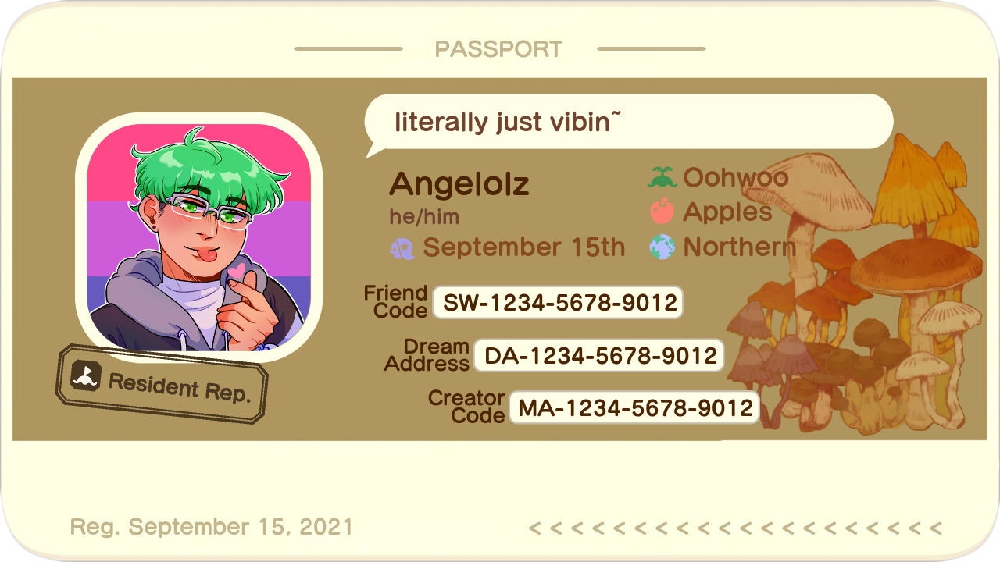

Profile Themes
Take a preview of all the themes we have for your profile!
Note: This is only for supporters. If you want to be a supporter, purchase a an image profile here!
Want to create your own theme and see it here for everyone to use? Join my support server and let's talk!


Classic Pink
Created by Angelolz and Windocs
ac!profile set theme 1
Classic Blue
Created by Angelolz and Windocs
ac!profile set theme 2
Classic Green
Created by Angelolz and Windocs
ac!profile set theme 3
Tết
Created by TuanKhang
ac!profile set theme 4
Sea Shore
Created by Jan Aliya
ac!profile set theme 5
Autumnal Mushrooms
Created by dobblekid
ac!profile set theme 6